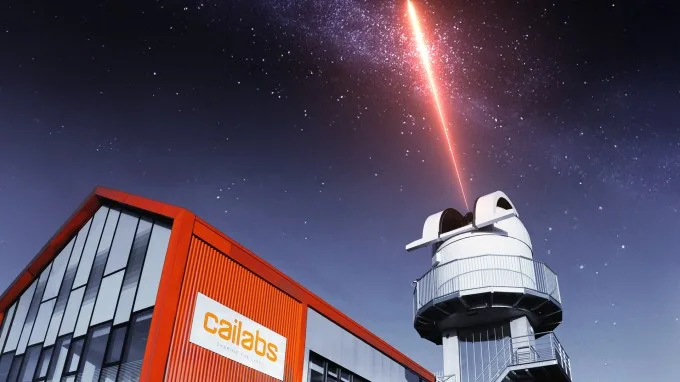

Венчурные инвесторы из крупнейших европейских фондов назвали TechCrunch по два стартапа каждый: один из портфеля, один — вне его. Редакция добавила несколько собственных picks. Итог — 21 компания на разных стадиях, от «скоро открываемся» до оценки в $1,4 млрд.
Самая громкая история в списке — Fundamental. Стартап разрабатывает foundation-модель Nexus для корпоративного анализа больших данных. В феврале 2025 года компания вышла из стелса сразу с раундом Series A на $255 млн и оценкой $1,4 млрд. Её рекомендовал Джонатан Юзеровичи из Headline — фонда, который инвестировал в компанию. Рядом в списке стоит Gradium: спин-офф французской исследовательской лаборатории Kyutai создаёт голосовые ИИ-модели для real-time text-to-speech на нескольких языках. Стартап позиционирует себя как конкурент ElevenLabs и привлёк seed-раунд на $70 млн.
| Стартап | Страна | Продукт | Инвестор/рекомендатель | Ключевой факт |
|---|---|---|---|---|
| Alta Ares | Европа | ИИ-системы противодействия дронам | Julien Codorniou, 20VC | — |
| Apron | Европа | Управление счетами для малого бизнеса | Jan Hammer, Index Ventures | — |
| Botify | Франция | Видимость брендов в ИИ-поиске (GEO) | Claire Houry, Ventech | Клиенты: Macy's, NYT |
| BottleCap AI | Чехия (Прага) | Эффективные LLM и приложения на их основе | Julien Codorniou, 20VC | Приложение Pulse |
| Cailabs | Франция | Фотоника для аэрокосмоса и обороны | Flavia Levi, Join Capital | 50 оптических наземных станций |
| Cala | Испания | Knowledge graph для ИИ-агентов | TechCrunch | Основательница продала Vilynx Apple в 2020 |
| Flower | Швеция | Управление возобновляемой энергией | Pär-Jörgen Pärson, Northzone | Привлекла >$60 млн в облигациях |
| Fundamental | Европа | Foundation ИИ для анализа больших данных | Jonathan Userovici, Headline | Оценка $1,4 млрд, Series A $255 млн |
| Gradium | Франция | Голосовые ИИ-модели | Jonathan Userovici, Headline | Seed $70 млн, спин-офф Kyutai |
| HappyRobot | США/Испания | ИИ-агенты для сложных сценариев | Pablo Ventura, Kfund | Инвесторы: a16z, YC |
| Inbolt | Европа | Физический ИИ для заводов | Claire Houry, Ventech | Активна в 70+ заводах |
| Legora | Швеция/США | ИИ-платформа для юристов | Pär-Jörgen Pärson, Northzone | Лицо бренда — Джуд Лоу |
| Macrodata Labs | Европа | Инфраструктура данных для обучения ИИ | Floriane de Maupeou, Serena | Pre-launch |
| Multiverse Computing | Испания | Сжатие open-weight моделей | TechCrunch | Привлекла $250 млн |
| Optics11 | Европа | Волоконно-оптические сенсорные системы | Flavia Levi, Join Capital | Венчурный долг от EIB |
| Pennylane | Франция | Финансовая платформа для МСБ | Jan Hammer, Index Ventures | Единорог |
| PLD Space | Испания | Запуск ракет | TechCrunch | Суборбитальный пуск в 2023 |
Испанская Multiverse Computing решает другую задачу — делает уже существующие open-weight модели компактнее и дешевле в эксплуатации, особенно на собственном железе заказчика. Компания работает с моделями OpenAI, Meta, DeepSeek и Mistral AI. Её сооснователь и технический директор Роман Орус — профессор Международного физического центра Доностии. Суммарные привлечённые инвестиции составляют $250 млн.
Gradium — спин-офф французской лаборатории Kyutai — привлёк seed-раунд на $70 млн для разработки голосовых ИИ-моделей.
Пражский BottleCap AI выбрал двойную стратегию: строит собственные LLM, ориентированные на эффективность, и одновременно выпускает приложения на их основе — в частности, новостное приложение Pulse. Среди основателей — предприниматель, продавший предыдущую компанию Meta, и два ИИ-исследователя. Стартап рекомендовал Жюльен Кодорниу из 20VC, который также является инвестором.
В сегменте юридического ИИ выделяется шведская Legora — платформа для юристов, конкурирующая с Harvey. Стартап привлёк внимание нестандартным маркетинговым ходом: лицом бренда стал актёр Джуд Лоу. Legora основана в Стокгольме, но сейчас базируется в Нью-Йорке.
Среди нишевых историй — французская Botify, которая начинала как SEO-инструмент ещё в 2016 году (участник Disrupt NY), а теперь помогает брендам наращивать видимость в ИИ-поисковиках через generative engine optimization. Среди её клиентов — Macy's и The New York Times. Конкуренты в этом сегменте — Otterly.AI и Profound.
Оборонный сектор представлен Alta Ares — разработчиком ИИ-систем противодействия дронам. Инвестор Жюльен Кодорниу из 20VC указывает на рост спроса на доступные решения для обнаружения и нейтрализации дронов на фоне войны в Украине. Cailabs из Франции занимается фотоникой для аэрокосмической и оборонной отраслей и планирует развернуть 50 оптических наземных станций для лазерной связи со спутниками.

В списке есть и компании, чьи основатели уже имеют крупные exits. Cala строит knowledge graph для ИИ-агентов; её основательница Элисенда Боу-Балуст в 2020 году продала предыдущий стартап Vilynx компании Apple. HappyRobot, разрабатывающий
Замыкает картину PLD Space — испанская компания, запустившая суборбитальную ракету в 2023 году и сейчас разрабатывающая многоразовый орбитальный носитель для малых спутников в рамках европейской программы космической автономии.